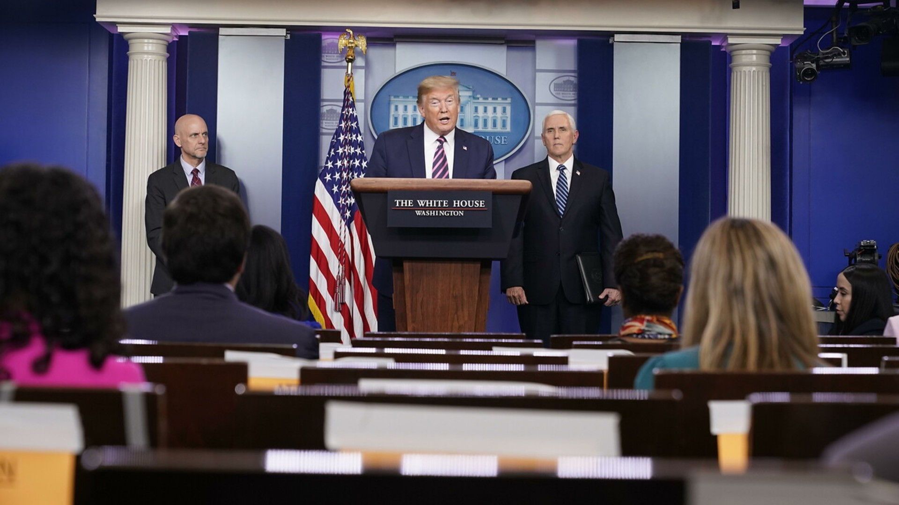

Daniel Ruiz Barrenas
TRUMP VS BIDEN
INTRODUCCIÓN
Trump ha sido el presidente de EE.UU durante los últimos 4 años,
ha tenido gente que lo quería y gente que no, siempre se le ha criticado por su manera de dirigir el país.
En esta página vamos a tratar no solo el porque de ese odio hacia Trump, también explicaremos como han sido las elecciones del útimo y más...
¿Porqué tanto odio hacia Trump
Prácticamente todos los analistas coinciden en que Donald Trump ha dominado las noticias en los últimos meses, esto es principalmente por algunas de las frases que el ha dicho pública y abiertamente, como son:
Los mexicanos son violadores
John McCain no es un héroe de guerra
No se puede votar a alguien con esa cara
Y otro gran motivo por el que hay tanto odio hacia Trump es por la construcción
de
un muro que sirviera como frontera entre México y Estados Unidos, que al final solo se construyeron 400km
de los 3.170 km prometidos, sin contar que de esos 400km, solo 8km no tenían una frontera antes.

Elecciones 2020
Estas elecciones comenzaron el dia y desde su inicio dieron mucho de que hablar.
Estas acabaron con la victoria de Biden frente a Trump, el cuál ha declarado que no se quedará contento con el resultado.
Biden logró imponerse al presidente Trump en el estado de Pensilvania, consiguiendo 273 votos electorales, de un total de 538. Trump se mantiene en 214.